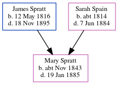

Mary Spratt cNov 1843 - 1885
[ Home ] | [ Calendar ] | [ Surnames Index ] | [ Errors ] | [ Family History ]The child of James Spratt (an agricultural labourer) and Sarah Spain, Mary Spratt, the great-great-aunt of Nigel Horne, was born in St Nicholas-at-Wade, Kent, England c. Nov 18431,2,3,4,5 and baptised there on 17 Dec 1843.
During her life, she was living at Crump's Farm in St Nicholas-at-Wade on 30 Mar 18518, at The Row in St Nicholas-at-Wade on 7 Apr 18612, and at Parish Cottage in St Nicholas-at-Wade on 2 Apr 187110 and on 3 Apr 18813 (when she was living with her).
She died on 19 Jan 1885 in Thanet, Kent, England6 and was buried in St Nicholas-at-Wade on 23 Jan 1885.
Parents
- James was born on 12 May 1816
- Sarah was born c. 1814
Citations
- 1851 England Census Online publication - Provo, UT, USA: The Generations Network, Inc., 2005.Original data - Census Returns of England and Wales, 1851. Kew, Surrey, England: The National Archives of the UK (TNA): Public Record Office (PRO), 1851. Data imaged from the National
- 1861 England Census Online publication - Provo, UT, USA: The Generations Network, Inc., 2005.Original data - Census Returns of England and Wales, 1861. Kew, Surrey, England: The National Archives of the UK (TNA): Public Record Office (PRO), 1861. Data imaged from the National
- 1881 England Census Online publication - Provo, UT, USA: The Generations Network, Inc., 2004. 1881 British Isles Census Index provided by The Church of Jesus Christ of Latter-day Saints © Copyright 1999 Intellectual Reserve, Inc. All rights reserved. All use is subject to the
- England & Wales births 1837-2006 - Findmypast
- England & Wales, FreeBMD Birth Index, 1837-1915 Online publication - Provo, UT, USA: The Generations Network, Inc., 2006.Original data - General Register Office. England and Wales Civil Registration Indexes. London, England: General Register Office. © Crown copyright. Published by permission of the Cont
- England & Wales deaths 1837-2007 - Findmypast
- 1861 England, Wales & Scotland Census - Findmypast (was age 17 and the daughter of the head of the household)
- 1851 England, Wales & Scotland Census - Findmypast (was age 7 and the daughter of the head of the household)
- 1881 England, Wales & Scotland Census - Findmypast (was age 34 and the daughter of the head of the household)
- 1871 England, Wales & Scotland Census - Findmypast (was age 27 and the daughter of the head of the household)
Media
England & Wales deaths 1837-2007 - BMD/D/1885/1/AZ/000367/276
1881 England, Wales & Scotland Census - GBC/1881/0004821355
1871 England, Wales & Scotland Census - GBC/1871/0014271863
England & Wales births 1837-2006 - BMD/B/1843/4/IZ/001338/001
Family Tree
Map
Generated by ged2site. Last updated on Jul 3, 2024
Known Issues
Burial date (23 Jan 1885) has no citations